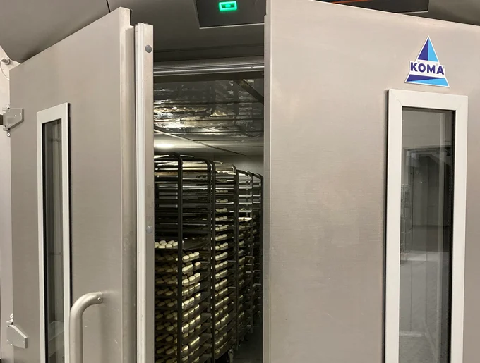
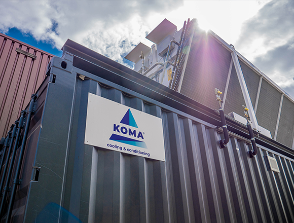

Koma is a Dutch company renowned for its specialization in industrial and commercial refrigeration solutions. With a history dating back to 1938, Koma has established itself as a leader in the field. They are recognized for their innovative and sustainable approach to cooling systems, focusing on energy-efficient solutions.
Product
Koma boasts an extensive array of advanced products within the industrial and commercial refrigeration sector. Their comprehensive product line encompasses a variety of offerings, such as state-of-the-art refrigeration units, precision-engineered cold storage solutions, and environmentally controlled environments. All Koma products are crafted with a strong emphasis on quality and energy efficiency, aligning with their commitment to delivering top-tier solutions to their clientele.
Assignment
Situation
Koma is at the forefront of the refrigeration industry, offering a diverse range of advanced refrigeration solutions. What sets their products apart is the seamless integration of cutting-edge hardware and sophisticated software. Despite their significant presence in the industry, Koma maintains a relatively compact software team. This small, dedicated group is responsible for the development and upkeep of the intricate software that powers Koma's applications, showcasing their commitment to innovation and efficiency.
Task
In recent times, a significant portion of Koma's software development department has transitioned into retirement, creating a noticeable void in knowledge and maintenance capabilities for Koma's vital software systems. Even as Koma strides forward with the development of the next generation of refrigeration systems, there is a pressing need to ensure the continued operation and support of their existing systems for an extended duration.
Faced with the challenge of sustaining these legacy software systems, Koma recognized the necessity to engage external expertise. As a result, I was brought on board to address this critical need. My role primarily involves meticulously documenting the intricacies of the existing software for future reference and seamless handover. Additionally, I am tasked with identifying and rectifying any pre-existing issues in the legacy software.


Action
What began as a modest documentation endeavor for Koma took an unexpected turn during the initial investigations. Deeper analysis unearthed substantial issues within the codebase of the KControl system. Consequently, the assignment evolved into a comprehensive initiative involving rigorous refactoring and the rectification of significant codebase issues.
This intensive effort yielded numerous benefits. Notably, I addressed several security vulnerabilities, reinforcing the system's resilience against potential threats. Moreover, the performance of the KControl system underwent a substantial improvement, enhancing its efficiency and overall functionality.
Result
The codebase of the KControl infrastructure underwent a substantial overhaul, not only strengthening the existing code but also receiving extensive documentation. A comprehensive set of documents was prepared for the existing IT department, offering insights into common errors within the KControl infrastructure and providing clear, step-by-step instructions on how to rectify them.
This comprehensive effort has culminated in Koma's assurance that the existing KControl systems can be both effectively utilized and maintained successfully, aligning with their commitment to the seamless operation of their crucial infrastructure.
Tools and Methods
Programming Languages
The existing codebase presented a dual architecture, incorporating components in both C++ and Java. The C++ elements were constructed within the QT framework, while the Java components were initially developed using Apache Ant, which was upgraded during development to the Maven build system. Effective communication and interaction between these diverse components were enabled through a combination of secure protocols, including SSL for data encryption, VNC for remote access, and XMPP for real-time messaging and collaboration.
Development Methods
At the outset of the assignment, Koma lacked an existing software development team, resulting in the absence of established development methodologies. However, a modern and structured approach was adopted for the documentation, aligning with contemporary software documentation standards. This approach ensured that the materials produced were comprehensive, organized, and readily accessible, despite the initial absence of established practices.